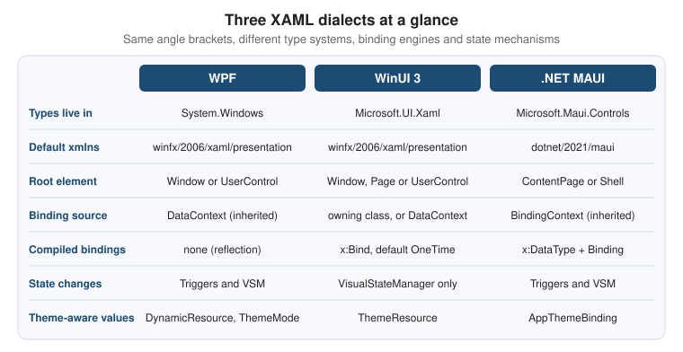

XAML Dialects: WPF, WinUI & MAUI
|
This content was generated with the assistance of AI and should be verified against the official documentation before being relied on in production. |
"XAML" names a markup syntax, not one framework. The same angle brackets drive three different stacks on Windows: WPF (the mature desktop framework that runs on .NET), WinUI 3 (the native UI layer of the Windows App SDK) and .NET MAUI (the cross-platform framework that renders through WinUI on Windows). They share the object-element, property-element and markup-extension syntax, and a developer who knows one of them reads the other two without trouble. They do not share a type system, a set of controls, a binding engine or a state mechanism, so markup is almost never copy-and-paste portable. This page lines the three dialects up on one example, the book row of Bookshelf Desktop, and then walks through the places where they diverge: namespaces, controls, binding, styles and visual states, resources and triggers. It ends with a porting checklist.
The versions assumed on this page, the same as everywhere in this section:
| Item | Version and notes |
|---|---|
.NET |
.NET 10 LTS, latest patch 10.0.13, with C# 14. .NET 11 is at release candidate 2 (11.0.0-rc.2) and general availability is expected at .NET Conf, 10-13 November 2026. .NET 8 and .NET 9 leave support on 2026-11-10. |
Visual Studio |
Visual Studio 2026, version 18.11.1, with the ".NET desktop development" workload (WPF), the "WinUI application development" workload (WinUI 3) and the ".NET Multi-platform App UI development" workload (.NET MAUI). |
WinUI 3 |
Windows App SDK 2.5.1 (stable channel). From 2.0 on the NuGet package version equals the SDK version. |
WPF |
Ships with the .NET 10 SDK ( |
.NET MAUI |
The .NET MAUI workload for .NET 10. On Windows it runs on WinUI 3 and requires Windows 10 version 1809 or later. |
MVVM Toolkit |
CommunityToolkit.Mvvm 8.4.2. |
Windows |
Windows 11 is the primary target. Windows 10 reached end of support on 2025-10-14, but WPF, WinUI 3 and .NET MAUI still run on Windows 10 version 1809 and later within their documented minimums. |
The page that introduces XAML itself is XAML Language Fundamentals, and the markup extensions are explained on
Markup Extensions & Namescopes. This page assumes both and concentrates on what changes between stacks. The
platform comparison (when to pick which stack) is on Windows App Platforms: WPF, WinUI 3, WinForms, MAUI & More.
The C# side of the examples (events, lambdas and async) is covered by
Delegates, Lambdas and Events and
Async and Await.
One Markup Syntax, Three Type Systems
Every XAML file is an XML document whose elements are .NET types and whose attributes are properties or events of those types. What changes between dialects is which types the default namespace resolves to, and therefore which controls, properties, binding engine and resource model are available.

The figure condenses the rest of the page. A few facts explain most of the differences:
-
WPF has been on .NET since .NET Core 3.0 and runs only on Windows. Its XAML is compiled to BAML (a binary form) inside the assembly, and its types live in
System.Windows. -
WinUI 3 descends from UWP XAML. The UWP types in
Windows.UI.Xamlwere re-published asMicrosoft.UI.Xamlin the Windows App SDK, so a lot of UWP and WinUI 2 markup ports with a namespace change. Its XAML is compiled to a binary form at build time and it adds the compiled{x:Bind}markup extension. -
.NET MAUI descends from Xamarin.Forms. Its pages and layouts are abstract (
ContentPage,Label,Entry) and are mapped to native controls through handlers, which on Windows are WinUI controls. Its markup is parsed by its own XAML parser and can be compiled into the assembly at build time.
The three dialects keep the general language rules from the XAML specification family: x:Name, x:Key,
x:Class, attached property syntax (Grid.Row="1"), property element syntax (<Grid.RowDefinitions>) and
content properties all work the same way. The official XAML overview for Windows apps describes the shared concepts
for WinUI and UWP, and the .NET MAUI documentation has its own XAML section.
Namespaces and Root Elements
The default namespace URI is the first thing that differs, and the most confusing one, because WPF and WinUI 3 use the same URI while pointing to different assemblies:
| Item | WPF | WinUI 3 | .NET MAUI |
|---|---|---|---|
Default |
|
|
|
|
|
|
|
Map your own types |
|
|
|
Design-time data |
|
|
none in the classic sense; use the XAML Live Preview of Visual Studio |
Typical root |
|
|
|
Code-behind base type |
|
|
|
Three consequences follow:
-
The same
xmlnstext means different things in a WPF project and a WinUI project. The build resolves it through the project’s references, so a XAML file copied from one to the other compiles against the wrong types and fails with "type not found" errors, not with a namespace error. -
WinUI 3 maps CLR namespaces with
using:and does not need anassembly=part. WPF and .NET MAUI useclr-namespace:and need;assembly=...when the type is in another assembly. In the Bookshelf solution that is the case for every view model, because the sharedBookshelf.Corelibrary holds them. -
The
x:namespace points to the 2006 URI in WPF and WinUI and to the 2009 URI in .NET MAUI. In WPF, features of the XAML 2009 language are usable only in loose XAML, so a WPF file cannot take the MAUI URI.
Another difference is what the root Window is. In WPF, Window is a ContentControl, so it has resources, styles,
a DataContext and a Background. In WinUI 3, Microsoft.UI.Xaml.Window is not a FrameworkElement: it has no
DataContext, no Resources, no Style and no Loaded event. The idiom is to keep MainWindow almost empty
and put the content in a Page or UserControl that hosts the resources, bindings and visual states. In .NET MAUI
the unit is the page (ContentPage), and the native window is created by the framework.
The Shared Core of Bookshelf Desktop
All three UIs below bind to the same view model. The portable part is a plain class library targeting net10.0
that references only CommunityToolkit.Mvvm. That is the strategy this page recommends for a multi-stack solution:
share view models, services and models, and write the XAML once per stack.
The types below are a deliberately reduced stand-in for the canonical Bookshelf Desktop types of the
MVVM Toolkit and Navigation, Dialogs & Services in MVVM
pages. Here Book is a single observable class (so the XAML can bind IsRead directly) and the repository has one
search method; in the rest of the section Book is an immutable record, wrapped by a BookViewModel, and
IBookRepository has GetAllAsync, GetByIdAsync, AddAsync, UpdateAsync and DeleteAsync. The binding paths
(Title, Author, Year) are the same in both forms, which is all this page compares.
using System.Collections.ObjectModel;
using CommunityToolkit.Mvvm.ComponentModel;
using CommunityToolkit.Mvvm.Input;
namespace Bookshelf.Core.Models;
public sealed partial class Book : ObservableObject
{
public required string Title { get; init; }
public required string Author { get; init; }
public int Year { get; init; }
public bool IsAvailable { get; init; } = true;
[ObservableProperty]
public partial bool IsRead { get; set; }
}
public interface IBookRepository
{
Task<IReadOnlyList<Book>> GetBooksAsync(string? search, CancellationToken cancellationToken);
}
public interface IDialogService
{
Task<bool> ConfirmAsync(string title, string message);
}
namespace Bookshelf.Core.ViewModels;
public sealed partial class BooksViewModel : ObservableObject
{
private readonly IBookRepository _repository;
private readonly IDialogService _dialogs;
public BooksViewModel(IBookRepository repository, IDialogService dialogs)
{
_repository = repository;
_dialogs = dialogs;
SearchText = string.Empty;
}
public ObservableCollection<Book> Books { get; } = [];
[ObservableProperty]
public partial string SearchText { get; set; }
[ObservableProperty]
[NotifyCanExecuteChangedFor(nameof(BorrowSelectedCommand))]
public partial Book? SelectedBook { get; set; }
[RelayCommand]
private async Task LoadAsync(CancellationToken cancellationToken)
{
var books = await _repository.GetBooksAsync(SearchText, cancellationToken);
Books.Clear();
foreach (var book in books)
{
Books.Add(book);
}
}
[RelayCommand(CanExecute = nameof(CanBorrowSelected))]
private async Task BorrowSelectedAsync()
{
if (SelectedBook is { } book
&& await _dialogs.ConfirmAsync("Borrow", $"Borrow \"{book.Title}\"?"))
{
book.IsRead = true;
}
}
private bool CanBorrowSelected() => SelectedBook is { IsAvailable: true };
partial void OnSearchTextChanged(string value) => LoadCommand.Execute(null);
}Source: MVVM Toolkit documentation
The sample has two deliberate properties. It contains no reference to System.Windows, Microsoft.UI.Xaml or
Microsoft.Maui, so each UI project consumes it unchanged, and IDialogService is the only seam where each stack
supplies its own implementation (MessageBox, ContentDialog or DisplayAlert). Neither the MVVM Toolkit nor
the WPF documentation provides an official dialog service or a navigation service; these interfaces are a pattern
used throughout this section, not a framework API. IBookRepository is implemented over EF Core and SQLite on
another page.
Controls and Properties That Change Name
The three stacks cover the same needs with different type names, and sometimes different property names for the same idea. The table lists the ones met on the book screen:
| Concept | WPF | WinUI 3 | .NET MAUI |
|---|---|---|---|
Static text |
|
|
|
Single-line input |
|
|
|
Button |
|
|
|
Check box |
|
|
|
List of items |
|
|
|
Selected item |
|
|
|
Vertical stack |
|
|
|
Grid |
|
|
|
Visibility |
|
|
|
Alignment |
|
|
|
Spacing inside a stack |
|
|
|
Page title |
|
|
|
Accessible name |
|
|
|
Parent-child content |
|
|
|
WPF and WinUI 3 look alike because WinUI inherited the UWP control model. MAUI uses its own vocabulary because its controls must map to iOS, Android and macOS as well. The practical result is that porting a WPF view to WinUI 3 is mostly a renaming and replacement job, while porting to MAUI is a rewrite of the markup on top of the same view model.
Other vocabulary differences are worth knowing before they cause a build error:
-
WPF has implicit data templates: a
DataTemplatewith only aDataTypeis applied automatically to any content of that type. WinUI 3 and MAUI have no such lookup; the template is set explicitly or chosen by aDataTemplateSelector. -
A
Brushin WPF and WinUI is aSolidColorBrush,LinearGradientBrushand so on. MAUI properties such asTextColorandBackgroundColortake aColor, andBackgroundtakes aBrush. -
MAUI
MarginandPaddingacceptThicknessstrings with the same 1, 2 or 4 number forms as WPF and WinUI. -
Standard dialogs differ:
MessageBoxand common dialogs in WPF,ContentDialog(which needs aXamlRoot) in WinUI 3, andDisplayAlertAsyncorDisplayAlerton the page in MAUI.
The Same Book Row in Three Dialects
The book screen has a search box, a list and, in each row, the title, the author, the year, an availability label and a "read" check box. The three listings below bind to the view model shown above, and each is a complete view.
WPF
<UserControl x:Class="Bookshelf.Wpf.Views.BooksView"
xmlns="http://schemas.microsoft.com/winfx/2006/xaml/presentation"
xmlns:x="http://schemas.microsoft.com/winfx/2006/xaml"
xmlns:d="http://schemas.microsoft.com/expression/blend/2008"
xmlns:mc="http://schemas.openxmlformats.org/markup-compatibility/2006"
xmlns:models="clr-namespace:Bookshelf.Core.Models;assembly=Bookshelf.Core"
xmlns:vm="clr-namespace:Bookshelf.Core.ViewModels;assembly=Bookshelf.Core"
mc:Ignorable="d"
d:DataContext="{d:DesignInstance Type=vm:BooksViewModel}">
<UserControl.Resources>
<BooleanToVisibilityConverter x:Key="BoolToVisibility" />
<DataTemplate x:Key="BookRowTemplate" DataType="{x:Type models:Book}">
<Grid Margin="8,6" ColumnDefinitions="*, Auto">
<StackPanel>
<TextBlock Text="{Binding Title}" FontWeight="SemiBold" />
<TextBlock Text="{Binding Author}" Opacity="0.7" />
<TextBlock Text="{Binding Year, StringFormat=Published {0}}" Opacity="0.7" />
</StackPanel>
<StackPanel Grid.Column="1" VerticalAlignment="Center">
<TextBlock Text="Available"
Visibility="{Binding IsAvailable, Converter={StaticResource BoolToVisibility}}" />
<CheckBox Content="Read" IsChecked="{Binding IsRead, Mode=TwoWay}" />
</StackPanel>
</Grid>
</DataTemplate>
</UserControl.Resources>
<Grid Margin="12" RowDefinitions="Auto, *">
<TextBox Text="{Binding SearchText, UpdateSourceTrigger=PropertyChanged}"
AutomationProperties.Name="Search books" Margin="0,0,0,8" />
<ListBox Grid.Row="1"
ItemsSource="{Binding Books}"
SelectedItem="{Binding SelectedBook, Mode=TwoWay}"
ItemTemplate="{StaticResource BookRowTemplate}" />
</Grid>
</UserControl>using System.Windows.Controls;
using Bookshelf.Core.ViewModels;
namespace Bookshelf.Wpf.Views;
public partial class BooksView : UserControl
{
// The view model is resolved by the Generic Host and handed in; there is no ViewModelLocator in the toolkit.
public BooksView(BooksViewModel viewModel)
{
InitializeComponent();
DataContext = viewModel;
}
}Source: Data binding overview (WPF)
What is specific to WPF in this listing:
-
{Binding}reads from the inheritedDataContext. The binding is resolved at run time by reflection andINotifyPropertyChanged. -
The
Griduses the short definition syntax (ColumnDefinitions="*, Auto") introduced in .NET 10. -
UpdateSourceTrigger=PropertyChangedis needed on theTextBoxbecause itsTextproperty updates the source onLostFocusby default. -
BooleanToVisibilityConverterships with WPF.Visibilityalso has aHiddenvalue that keeps the layout space. -
d:DataContextwithd:DesignInstancegives the designer a typed context and is removed from the compiled output bymc:Ignorable.
WinUI 3
<Page
x:Class="Bookshelf.WinUI.Views.BooksPage"
xmlns="http://schemas.microsoft.com/winfx/2006/xaml/presentation"
xmlns:x="http://schemas.microsoft.com/winfx/2006/xaml"
xmlns:d="http://schemas.microsoft.com/expression/blend/2008"
xmlns:mc="http://schemas.openxmlformats.org/markup-compatibility/2006"
xmlns:models="using:Bookshelf.Core.Models"
mc:Ignorable="d">
<Page.Resources>
<DataTemplate x:Key="BookRowTemplate" x:DataType="models:Book">
<Grid Padding="8,6" ColumnSpacing="12">
<Grid.ColumnDefinitions>
<ColumnDefinition Width="*" />
<ColumnDefinition Width="Auto" />
</Grid.ColumnDefinitions>
<StackPanel>
<TextBlock Text="{x:Bind Title}" Style="{StaticResource BodyStrongTextBlockStyle}" />
<TextBlock Text="{x:Bind Author}"
Foreground="{ThemeResource TextFillColorSecondaryBrush}" />
<TextBlock Text="{x:Bind Year}"
Foreground="{ThemeResource TextFillColorSecondaryBrush}" />
</StackPanel>
<StackPanel Grid.Column="1" VerticalAlignment="Center">
<TextBlock Text="Available" Visibility="{x:Bind IsAvailable}" />
<CheckBox Content="Read" IsChecked="{x:Bind IsRead, Mode=TwoWay}" />
</StackPanel>
</Grid>
</DataTemplate>
</Page.Resources>
<Grid Padding="12" RowSpacing="8">
<Grid.RowDefinitions>
<RowDefinition Height="Auto" />
<RowDefinition Height="*" />
</Grid.RowDefinitions>
<TextBox PlaceholderText="Search books"
Text="{x:Bind ViewModel.SearchText, Mode=TwoWay, UpdateSourceTrigger=PropertyChanged}"
AutomationProperties.Name="Search books" />
<ListView Grid.Row="1"
ItemsSource="{x:Bind ViewModel.Books}"
SelectedItem="{x:Bind ViewModel.SelectedBook, Mode=TwoWay}"
ItemTemplate="{StaticResource BookRowTemplate}" />
</Grid>
</Page>using Bookshelf.Core.ViewModels;
using Microsoft.Extensions.DependencyInjection;
using Microsoft.UI.Xaml.Controls;
namespace Bookshelf.WinUI.Views;
public sealed partial class BooksPage : Page
{
// x:Bind resolves "ViewModel.SearchText" against this class, so the view model must be a property here.
public BooksViewModel ViewModel { get; }
public BooksPage()
{
// App.Services is the host service provider exposed by the sample application class.
ViewModel = App.Services.GetRequiredService<BooksViewModel>();
InitializeComponent();
}
}Source: x:Bind markup extension
What is specific to WinUI 3 in this listing:
-
The default namespace URI is the same as in WPF, but the types are
Microsoft.UI.Xamltypes; the custom namespace usesusing:. -
{x:Bind Title}has noDataContext: inside theDataTemplatethe path starts at the type named byx:DataType(Book), and outside it the path starts at theBooksPageclass, which is whyViewModelis a property in the code-behind. -
Every
x:Bindhere isOneTimeexcept the ones that declare a mode.IsAvailableis read-only,Title,AuthorandYearhaveinitsetters, so one-time evaluation is exactly right;IsReadneedsTwoWay. -
x:Bindconverts aboolto aVisibilitywithout a converter, so the WPFBooleanToVisibilityConverterhas no counterpart.Bindingin WinUI 3 still needs a converter for the same conversion. -
Theme-aware colors come from
{ThemeResource}keys defined by the WinUI control resources (XamlControlsResources, merged inApp.xaml). -
There is no implicit
DataTemplatelookup, so the template is assigned throughItemTemplate.
.NET MAUI
<?xml version="1.0" encoding="utf-8" ?>
<ContentPage x:Class="Bookshelf.Maui.Views.BooksPage"
xmlns="http://schemas.microsoft.com/dotnet/2021/maui"
xmlns:x="http://schemas.microsoft.com/winfx/2009/xaml"
xmlns:models="clr-namespace:Bookshelf.Core.Models;assembly=Bookshelf.Core"
xmlns:vm="clr-namespace:Bookshelf.Core.ViewModels;assembly=Bookshelf.Core"
x:DataType="vm:BooksViewModel"
Title="Bookshelf">
<Grid Padding="12" RowDefinitions="Auto,*" RowSpacing="8">
<SearchBar Placeholder="Search books"
Text="{Binding SearchText}"
SemanticProperties.Description="Search books" />
<CollectionView Grid.Row="1"
ItemsSource="{Binding Books}"
SelectionMode="Single"
SelectedItem="{Binding SelectedBook}">
<CollectionView.ItemTemplate>
<DataTemplate x:DataType="models:Book">
<Grid Padding="8,6" ColumnDefinitions="*,Auto" ColumnSpacing="12">
<VerticalStackLayout>
<Label Text="{Binding Title}" FontAttributes="Bold" />
<Label Text="{Binding Author}" Opacity="0.7" />
<Label Text="{Binding Year, StringFormat='Published {0}'}" Opacity="0.7" />
</VerticalStackLayout>
<VerticalStackLayout Grid.Column="1" VerticalOptions="Center">
<Label Text="Available" IsVisible="{Binding IsAvailable}" />
<HorizontalStackLayout>
<CheckBox IsChecked="{Binding IsRead}" />
<Label Text="Read" VerticalOptions="Center" />
</HorizontalStackLayout>
</VerticalStackLayout>
</Grid>
</DataTemplate>
</CollectionView.ItemTemplate>
</CollectionView>
</Grid>
</ContentPage>using Bookshelf.Core.ViewModels;
namespace Bookshelf.Maui.Views;
public partial class BooksPage : ContentPage
{
public BooksPage(BooksViewModel viewModel)
{
InitializeComponent();
BindingContext = viewModel;
}
}Source: .NET MAUI XAML
What is specific to .NET MAUI in this listing:
-
The root has a
Title, and the page is registered with theMauiAppBuilderservices so the constructor injection works. The binding source is theBindingContext, not aDataContext. -
x:DataType="vm:BooksViewModel"on the page andx:DataType="models:Book"on the template turn every{Binding}below them into a compiled binding (see the next section). -
Entry.Text,SearchBar.Text,CheckBox.IsCheckedandCollectionView.SelectedItembind two-way by default, so noModeis written. MAUI has noUpdateSourceTrigger: those controls push changes as the user edits. -
IsVisibleis abool, so no converter is needed for availability. -
CheckBoxhas noContent, so the label is a separateLabel. Layouts useSpacingandPaddinginstead of child margins by convention. -
Colors and text styles would come from the
Resources/Stylesdictionaries generated by the project template.
Binding: Binding, x:Bind and Compiled Bindings
All three stacks use the same data-binding idea: a target property on a UI element reads (and sometimes writes) a
source property, and INotifyPropertyChanged or ObservableCollection<T> tell the binding when to refresh. How the
binding is declared, resolved and compiled is where the dialects differ.
| Aspect | WPF {Binding} |
WinUI 3 {x:Bind} |
.NET MAUI {Binding} with x:DataType |
|---|---|---|---|
Resolution |
Run time, reflection |
Build time, generated code |
Build time when |
Source of the path |
|
The page, user control or window class; in a template, the |
|
Default mode |
|
|
|
Type checking |
None; errors appear in the output window at run time |
Compile errors for wrong paths and types |
Compile errors for wrong paths when compiled; none otherwise |
Event binding |
No; use commands or behaviors |
Yes, |
No; use commands |
Function binding |
No; use converters |
Yes, |
No; use converters and |
|
|
|
Not available |
Debugging |
Binding errors in the Output window, |
Step into the generated |
Compile-time diagnostics for compiled bindings |
Binding in WPF and WinUI 3
{Binding} exists in WPF and WinUI 3 with similar properties (Path, Mode, Converter, ConverterParameter,
FallbackValue, TargetNullValue, ElementName, Source, StringFormat, RelativeSource). Differences to
remember when porting:
-
WPF supports
MultiBindingandIMultiValueConverter; WinUI 3 has noMultiBinding. Use function binding withx:Bind, or compute the value in the view model. -
WPF
IValueConverter.Convertreceives aCultureInfo; the WinUI interface receives a language string, and it lives inMicrosoft.UI.Xaml.Data. -
WPF has
IsAsync, binding validation rules andBindingGroup; WinUI 3 has no equivalent of the last two. -
Bindingin WinUI 3 is still available and is the way to useElementNameandRelativeSourcein a template that must reach the page’s data context.
x:Bind in Detail
{x:Bind} exists only in WinUI (and UWP). WPF does not have it, and .NET MAUI does not use that syntax. It
differs from {Binding} in three ways that matter every day:
-
It is compiled and strongly typed. The XAML compiler turns each
{x:Bind}into generated C# code, which reads the property directly and subscribes to change notifications. A wrong property name is a build error. -
It resolves against the page, not the
DataContext. Outside aDataTemplate, the path is relative to the page, user control or window class that owns the markup, so code-behind members (including aViewModelproperty) are directly bindable. Inside aDataTemplate, it is relative to the type given inx:DataType. -
Its default mode is
OneTime. The generated code reads the value once, when the page loads. For updates, writeMode=OneWayorMode=TwoWayand implementINotifyPropertyChangedon the source.
<Page
x:Class="Bookshelf.WinUI.Views.BookDetailsPage"
xmlns="http://schemas.microsoft.com/winfx/2006/xaml/presentation"
xmlns:x="http://schemas.microsoft.com/winfx/2006/xaml"
xmlns:local="using:Bookshelf.WinUI">
<StackPanel Spacing="8" Padding="16">
<!-- OneTime (the default): evaluated when the page loads -->
<TextBlock Text="{x:Bind ViewModel.SelectedBook.Title}" />
<!-- OneWay: refreshed when SelectedBook or its Title raise PropertyChanged -->
<TextBlock Text="{x:Bind ViewModel.SelectedBook.Author, Mode=OneWay}" />
<!-- TwoWay with a fallback for a null chain -->
<TextBox Text="{x:Bind ViewModel.SearchText, Mode=TwoWay, FallbackValue='(none)'}" />
<!-- Function binding: a static method evaluated with bound arguments -->
<TextBlock Text="{x:Bind local:Formatting.ByLine(ViewModel.SelectedBook.Author, ViewModel.SelectedBook.Year), Mode=OneWay}" />
<!-- Binding to an element by name: the element is a field of the page -->
<TextBlock Text="{x:Bind SearchBox.Text, Mode=OneWay}" />
<TextBox x:Name="SearchBox" />
</StackPanel>
</Page>namespace Bookshelf.WinUI;
public static class Formatting
{
public static string ByLine(string? author, int year) =>
author is null ? string.Empty : $"{author}, {year}";
}Source: x:Bind markup extension
Points about the listing:
-
x:Bindcan also bind an event such asClickdirectly to a method of the page or of the view model, and thex:Bindpage lists which method signatures are accepted. This page does not use it, because the toolkit exposes commands, which bind withCommand. -
ElementNameis not needed: because the elements named withx:Nameare fields of the page, they can be addressed directly in the path. -
RelativeSourceis not supported byx:Bind; the parent is reached through the page. -
Bindings.Update()forces a refresh ofOneTimeandOneWaybindings, andBindings.StopTracking()releases them.x:Phaselets large lists render progressively.x:Load(deferred loading) uses the same compiled model.
The other consequence of resolving against the page is that code inside a DataTemplate cannot see the page. A
Button in a book row that must call BooksViewModel.BorrowSelected has three options in WinUI 3: put the command on
the item (a row view model), bind the event to a method of the item type, or use {Binding} with ElementName to
reach the page’s DataContext. In WPF the same case is written with
{Binding DataContext.BorrowSelectedCommand, RelativeSource={RelativeSource AncestorType=ListBox}}.
Compiled Bindings in .NET MAUI
{x:Bind}. It compiles ordinary {Binding} expressions when it knows the type of thebinding source, which you declare with the x:DataType attribute. The XAML compiler then checks each path against
that type and replaces reflection with generated accessors.
<ContentPage xmlns="http://schemas.microsoft.com/dotnet/2021/maui"
xmlns:x="http://schemas.microsoft.com/winfx/2009/xaml"
xmlns:models="clr-namespace:Bookshelf.Core.Models;assembly=Bookshelf.Core"
xmlns:vm="clr-namespace:Bookshelf.Core.ViewModels;assembly=Bookshelf.Core"
x:Class="Bookshelf.Maui.Views.BookDetailsPage"
x:DataType="vm:BooksViewModel">
<VerticalStackLayout Padding="16" Spacing="8">
<!-- Compiled: the path is checked against BooksViewModel at build time -->
<Label Text="{Binding SelectedBook.Title}" />
<!-- A template that binds to another type redeclares x:DataType -->
<VerticalStackLayout BindableLayout.ItemsSource="{Binding Books}">
<BindableLayout.ItemTemplate>
<DataTemplate x:DataType="models:Book">
<Label Text="{Binding Title}" />
</DataTemplate>
</BindableLayout.ItemTemplate>
</VerticalStackLayout>
<!-- Turn compilation off for one element that uses a dynamic source -->
<Label x:DataType="{x:Null}" Text="{Binding DynamicValue}" />
<!-- Reaching the page view model from inside a template -->
<Button Text="Borrow"
Command="{Binding Source={RelativeSource AncestorType={x:Type vm:BooksViewModel}}, Path=BorrowSelectedCommand}" />
</VerticalStackLayout>
</ContentPage>Source: Compiled bindings (.NET MAUI)
Rules that follow from the documented model:
-
x:DataTypeapplies to the element and all of its descendants. It is the way to switch on compiled bindings for a whole page, and everyDataTemplatemust restate it with the item type because a template does not inherit the page’s data type. -
x:DataType="{x:Null}"switches compilation off for a subtree, for example where the source is a dictionary or a type decided at run time. -
A
SourceorRelativeSourcechanges the binding source type, so the compiled check applies to that source and not to the page’sx:DataType. The compiler needs to know the type of theRelativeSourceancestor. -
Without
x:DataTypethe binding still works, through reflection, and the build can report warnings suggesting you add it. Treating those warnings as errors is a reasonable way to keep every binding compiled. -
A compile-time failure appears for a path that does not exist on the declared type, which is the MAUI counterpart of the compile error WinUI 3 gives for a wrong
{x:Bind}path.
| Task | Write in WinUI 3 | Write in .NET MAUI |
|---|---|---|
Show a property once |
|
|
Keep a property in sync |
|
|
Two-way input |
|
|
Reach the page from a template |
not possible with |
|
Choose the source type |
the page class or |
|
Neither the x:Bind page nor the MAUI compiled bindings page describes WPF, and the WPF documentation has no
equivalent of either: in WPF, run-time {Binding} is the only binding syntax in XAML. The MVVM source generators
of the toolkit reduce boilerplate in all three stacks without changing this.
Styling and Visual States
All three stacks use Style with TargetType and Setter elements, implicit styles keyed by type, and BasedOn
inheritance. They diverge in how a style reacts to state.
| Aspect | WPF | WinUI 3 | .NET MAUI |
|---|---|---|---|
|
Yes; an implicit style applies to every element of the type in scope |
Yes; implicit styles apply to every element of that exact type in scope |
Yes; implicit styles apply to the type in scope, and a |
|
Yes |
Yes |
Yes |
State inside a style |
|
None; use the |
|
Control templates |
|
|
|
Responsive layout |
|
|
|
Light and dark values |
|
|
|
The control-template difference is the largest one: WPF and WinUI 3 let an application replace the visuals of
nearly every control, while a MAUI control is a thin wrapper over a native control and is customized through its
properties, handlers or ControlTemplate on the few templated controls.
WPF: Styles With Triggers
<ResourceDictionary xmlns="http://schemas.microsoft.com/winfx/2006/xaml/presentation"
xmlns:x="http://schemas.microsoft.com/winfx/2006/xaml">
<Style x:Key="BookTitleStyle" TargetType="TextBlock">
<Setter Property="FontSize" Value="16" />
<Setter Property="FontWeight" Value="SemiBold" />
</Style>
<Style TargetType="ListBoxItem">
<Setter Property="Padding" Value="8,6" />
<Style.Triggers>
<!-- A data trigger reads a property of the item, no code-behind needed -->
<DataTrigger Binding="{Binding IsAvailable}" Value="False">
<Setter Property="Opacity" Value="0.55" />
</DataTrigger>
<!-- A property trigger reacts to a dependency property of the element itself -->
<Trigger Property="IsMouseOver" Value="True">
<Setter Property="Background" Value="{DynamicResource BookHoverBrush}" />
</Trigger>
<!-- Several conditions at once -->
<MultiTrigger>
<MultiTrigger.Conditions>
<Condition Property="IsSelected" Value="True" />
<Condition Property="IsMouseOver" Value="True" />
</MultiTrigger.Conditions>
<Setter Property="Background" Value="{DynamicResource BookSelectedHoverBrush}" />
</MultiTrigger>
</Style.Triggers>
</Style>
</ResourceDictionary>Source: Styles and templates (WPF)
WinUI 3: Styles With Visual States
<Page
x:Class="Bookshelf.WinUI.Views.BooksShellPage"
xmlns="http://schemas.microsoft.com/winfx/2006/xaml/presentation"
xmlns:x="http://schemas.microsoft.com/winfx/2006/xaml">
<Page.Resources>
<Style x:Key="BookTitleStyle" TargetType="TextBlock"
BasedOn="{StaticResource BodyStrongTextBlockStyle}">
<Setter Property="Foreground" Value="{ThemeResource TextFillColorPrimaryBrush}" />
</Style>
</Page.Resources>
<Grid x:Name="RootGrid">
<Grid.ColumnDefinitions>
<ColumnDefinition Width="*" />
<ColumnDefinition x:Name="DetailsColumn" Width="0" />
</Grid.ColumnDefinitions>
<ListView x:Name="BookList" />
<StackPanel x:Name="DetailsPane" Grid.Column="1" Visibility="Collapsed" />
<VisualStateManager.VisualStateGroups>
<VisualStateGroup x:Name="WidthStates">
<VisualState x:Name="Wide">
<VisualState.StateTriggers>
<AdaptiveTrigger MinWindowWidth="900" />
</VisualState.StateTriggers>
<VisualState.Setters>
<Setter Target="DetailsPane.Visibility" Value="Visible" />
<Setter Target="DetailsColumn.Width" Value="360" />
</VisualState.Setters>
</VisualState>
<VisualState x:Name="Narrow">
<VisualState.StateTriggers>
<AdaptiveTrigger MinWindowWidth="0" />
</VisualState.StateTriggers>
</VisualState>
</VisualStateGroup>
</VisualStateManager.VisualStateGroups>
</Grid>
</Page>Source: XAML overview (Windows apps)
WinUI 3 has no Style.Triggers and no DataTrigger. The VisualStateManager replaces them: a VisualState
declares Setters (and optionally a Storyboard) that apply while a state is active, and StateTriggers activate
the state. AdaptiveTrigger reacts to window size; StateTrigger has an IsActive property that can be bound, which
is the closest analogue to a WPF DataTrigger. A custom StateTriggerBase subclass can drive a state from your own
logic. Target in a setter takes an ElementName.Property path and, unlike a Style setter, can reach any named
element on the page.
.NET MAUI: Style Classes, Visual States and Triggers
<ResourceDictionary xmlns="http://schemas.microsoft.com/dotnet/2021/maui"
xmlns:x="http://schemas.microsoft.com/winfx/2009/xaml">
<Style x:Key="BookTitleStyle" TargetType="Label">
<Setter Property="FontSize" Value="16" />
<Setter Property="FontAttributes" Value="Bold" />
</Style>
<!-- A style class is applied with StyleClass="Caption" and several can be combined -->
<Style TargetType="Label" Class="Caption">
<Setter Property="Opacity" Value="0.7" />
<Setter Property="FontSize" Value="12" />
</Style>
<!-- Visual states inside a style: the selected row gets a themed background -->
<Style TargetType="Grid">
<Setter Property="VisualStateManager.VisualStateGroups">
<VisualStateGroupList>
<VisualStateGroup x:Name="CommonStates">
<VisualState x:Name="Normal" />
<VisualState x:Name="Selected">
<VisualState.Setters>
<Setter Property="BackgroundColor"
Value="{AppThemeBinding Light=#DCE9F7, Dark=#2B3F55}" />
</VisualState.Setters>
</VisualState>
</VisualStateGroup>
</VisualStateGroupList>
</Setter>
</Style>
</ResourceDictionary>Source: .NET MAUI XAML
MAUI visual states use VisualStateManager with groups such as CommonStates, whose Normal, Selected,
Disabled and Focused states are set by the control. State triggers (AdaptiveTrigger, OrientationStateTrigger,
DeviceStateTrigger, CompareStateTrigger) can activate a custom state, and the Triggers collection of an
element supports Trigger, DataTrigger, MultiTrigger and EventTrigger as described below.
Resources and Theming
ResourceDictionary exists in all three stacks, with x:Key, merged dictionaries and a lookup that walks from the
element up through its parents to the application. The differences are in the markup extensions and in how themes
are expressed.
| Aspect | WPF | WinUI 3 | .NET MAUI |
|---|---|---|---|
Static lookup |
|
|
|
Dynamic lookup |
|
|
|
Merged dictionaries |
|
|
|
Per-theme values |
Fluent theme dictionary, |
|
|
File URIs |
Pack URIs ( |
|
Relative paths such as |
Control look |
Per-control templates in the theme dictionary; Fluent (opt-in since .NET 9) |
Fluent by default through |
Native look per platform; shared |
<!-- WPF App.xaml -->
<Application x:Class="Bookshelf.Wpf.App"
xmlns="http://schemas.microsoft.com/winfx/2006/xaml/presentation"
xmlns:x="http://schemas.microsoft.com/winfx/2006/xaml"
ThemeMode="System">
<Application.Resources>
<ResourceDictionary>
<ResourceDictionary.MergedDictionaries>
<ResourceDictionary Source="Themes/BookColors.xaml" />
<ResourceDictionary Source="Themes/BookStyles.xaml" />
</ResourceDictionary.MergedDictionaries>
</ResourceDictionary>
</Application.Resources>
</Application><!-- WinUI 3 App.xaml -->
<Application x:Class="Bookshelf.WinUI.App"
xmlns="http://schemas.microsoft.com/winfx/2006/xaml/presentation"
xmlns:x="http://schemas.microsoft.com/winfx/2006/xaml">
<Application.Resources>
<ResourceDictionary>
<ResourceDictionary.MergedDictionaries>
<XamlControlsResources xmlns="using:Microsoft.UI.Xaml.Controls" />
<ResourceDictionary Source="ms-appx:///Styles/BookStyles.xaml" />
</ResourceDictionary.MergedDictionaries>
<ResourceDictionary.ThemeDictionaries>
<ResourceDictionary x:Key="Light">
<SolidColorBrush x:Key="BookAccentBrush" Color="#1C4B73" />
</ResourceDictionary>
<ResourceDictionary x:Key="Dark">
<SolidColorBrush x:Key="BookAccentBrush" Color="#8DB8E0" />
</ResourceDictionary>
</ResourceDictionary.ThemeDictionaries>
</ResourceDictionary>
</Application.Resources>
</Application><!-- .NET MAUI App.xaml -->
<Application x:Class="Bookshelf.Maui.App"
xmlns="http://schemas.microsoft.com/dotnet/2021/maui"
xmlns:x="http://schemas.microsoft.com/winfx/2009/xaml">
<Application.Resources>
<ResourceDictionary>
<ResourceDictionary.MergedDictionaries>
<ResourceDictionary Source="Resources/Styles/Colors.xaml" />
<ResourceDictionary Source="Resources/Styles/Styles.xaml" />
</ResourceDictionary.MergedDictionaries>
<Color x:Key="BookAccentLight">#1C4B73</Color>
<Color x:Key="BookAccentDark">#8DB8E0</Color>
<Style x:Key="BookAccentLabel" TargetType="Label">
<Setter Property="TextColor"
Value="{AppThemeBinding Light={StaticResource BookAccentLight}, Dark={StaticResource BookAccentDark}}" />
</Style>
</ResourceDictionary>
</Application.Resources>
</Application>Source: XAML resources (WPF)
The WPF ThemeMode="System" attribute is the Fluent theme opt-in introduced in .NET 9 and extended in .NET 10. Its
API is marked experimental: code that sets ThemeMode raises the diagnostic WPF0001 as an error, which has to be
suppressed with NoWarn in the project file or a #pragma around the assignment (the Themes and Fluent Design page
shows both). The documentation for it is in the what’s new pages for .NET 9 and .NET 10 only; there is no dedicated
Fluent theming guide for WPF. Without ThemeMode, WPF keeps the classic Aero2 look.
Triggers: Where They Exist
The outline of this section calls triggers "WPF only", and that statement needs a precise reading. Only WPF has the full trigger model that lives in styles, control templates and data templates and can start storyboards. WinUI 3 has no triggers in that sense. MAUI has a smaller family of triggers that apply to a single element.
| Trigger | WPF | WinUI 3 | .NET MAUI |
|---|---|---|---|
Property trigger ( |
Yes, in |
No |
Yes, in the |
Data trigger ( |
Yes |
No; bind |
Yes, |
Multi-condition |
|
Several state triggers on one |
|
Event trigger |
|
No; use |
|
State and adaptive triggers |
No; WPF has |
Yes, |
Yes, |
<DataTemplate x:DataType="models:Book">
<Label Text="{Binding Title}">
<Label.Triggers>
<DataTrigger TargetType="Label" Binding="{Binding IsAvailable}" Value="False">
<Setter Property="Opacity" Value="0.55" />
<Setter Property="TextDecorations" Value="Strikethrough" />
</DataTrigger>
</Label.Triggers>
</Label>
</DataTemplate>Source: .NET MAUI XAML
The XAML Behaviors package (Microsoft.Xaml.Behaviors.Wpf, with a sibling for WinUI) gives WPF and WinUI projects
declarative Interaction.Triggers and Actions such as InvokeCommandAction. That is a separate, Microsoft-hosted
package, not part of any of the three frameworks, and it is covered on the page about dependency injection and the
Generic Host.
Porting Markup Between Stacks
Moving a screen from one stack to another is two separate tasks: the code-behind and the view model, which are C#, and the markup, which is not portable. Treat the view model as shared, the XAML as rewritten, and port in this order.
A Porting Checklist
| Step | WPF to WinUI 3 | WPF to .NET MAUI | WinUI 3 to .NET MAUI |
|---|---|---|---|
1. Namespaces |
|
Replace the default |
Replace the default |
2. Root element |
|
|
|
3. Layout and controls |
Mostly the same names; |
|
Same table as in the controls section |
4. Binding source |
Add a typed |
|
|
5. Converters |
|
Drop converters for |
Re-implement against the MAUI interface |
6. Triggers |
|
|
|
7. Resources |
|
|
|
8. Events |
|
|
|
9. Threading |
|
|
|
10. Dialogs and windows |
|
|
|
11. Resources and strings |
|
|
|
Strategy for a Multi-Stack Solution
-
Move the logic first. Put models, view models, services and tests in a
net10.0library with no UI dependency, as inBookshelf.Core. CommunityToolkit.Mvvm works in WPF, WinUI 3 and .NET MAUI projects alike. -
Keep each stack’s XAML native. Do not look for an abstraction layer that generates three dialects from one file; the differences listed above are exactly the places it would break.
-
Port screen by screen. Rebuild one view in the target stack, bind it to the same view model, and compare behaviors before moving the next one.
-
Mind the host. WPF and WinUI 3 apps are unpackaged or packaged desktop apps; a .NET MAUI app on Windows is packaged by default. The packaging and distribution pages cover the consequences.
-
Consider hosting instead of porting. The Windows App SDK and the interop pages of this section cover embedding WinUI 3 content in a WPF app and the reverse. Official documentation does not provide wrapper controls for hosting WinUI 3 in WPF through XAML Islands, so this path needs more code than the main ones.
-
Use the official migration guidance. The migration decision guide of the Windows App SDK documentation and the WPF upgrade pages cover moving from .NET Framework and from UWP.
Third-party frameworks such as Avalonia and Uno Platform are also XAML based and promise one markup file across platforms. They are third-party projects, not part of Microsoft’s stack, with their own XAML dialects and namespaces. This page does not teach them; evaluate them as separate products if one markup file across operating systems is a hard requirement.
From .NET Framework to .NET 8, 9 and 10
The XAML itself rarely changes when a WPF app moves from .NET Framework to modern .NET; the project file does.
| Area | .NET Framework | .NET 8, 9 and 10 |
|---|---|---|
Project |
Old-style |
SDK-style project with |
Binding |
Same run-time |
Same; new tooling and the toolkit source generators |
Theme |
Aero2 and classic themes |
Fluent theme opt-in with |
Grid definitions |
Elements only |
String shorthand such as |
Trimming and Native AOT |
Not applicable |
Not supported for WPF (the SDK reports |
What the Official Documentation Does Not Provide
Be careful with these gaps when planning a port, and do not assume the documentation covers them:
-
There is no single official page that compares WPF, WinUI 3 and .NET MAUI XAML side by side. The comparison on this page is assembled from the XAML overview for Windows apps, the
x:Bindpage, the .NET MAUI XAML section, the .NET MAUI compiled-bindings page and the WPF reference pages. -
There is no official XAML conversion tool between the stacks. The migration pages for WPF and the Windows App SDK describe the decisions and API differences, but they do not translate markup automatically.
-
The documentation has no WPF Fluent theming deep dive, only the what’s new pages for .NET 9 and .NET 10, and the theme API is experimental (
WPF0001whenThemeModeis set from code). -
WPF has no
x:Bind, and no official MVVM guidance specific to WPF. The WinUI data-binding and MVVM pages and the .NET MAUI enterprise application patterns book chapters are the closest official material. -
Whether .NET MAUI will add its own compiled-binding markup beyond
x:DataTypeis not something this page can state; read the .NET MAUI release notes for the version you target.
Pitfalls
-
Same URI, different types. Copying WPF XAML into a WinUI project compiles against
Microsoft.UI.Xaml. Expect errors forTriggers,DataGrid,Hidden,MultiBindingandDynamicResource. -
x:Binddefaults toOneTime. A label that never updates in WinUI 3 is almost always a missingMode=OneWay. In WPF and MAUI the same binding updates, because those engines default toOneWay. -
Pages are not
DataContextholders. In WinUI 3,Windowhas noDataContext, so{Binding}on a window element has nothing to bind to; use aPageorx:Bindwith a property. -
Templates and the data type. MAUI
DataTemplateelements needx:DataType, and WinUI 3DataTemplateelements that usex:Bindneed it too. Missing it leaves MAUI on reflection and fails the WinUI build. -
Changing a collection versus changing an item.
ObservableCollection<T>notifies about adds and removes only; anIsReadchange on aBookneedsINotifyPropertyChanged, which the toolkit generates for[ObservableProperty]. -
UI thread. Updating
Booksfrom a background thread throws in all three stacks. Marshal to the dispatcher (Dispatcher,DispatcherQueueorMainThread), or produce the collection and assign it on the UI thread. -
Trimming and AOT. Reflection-based
{Binding}is the part least friendly to trimming. In MAUI, compiled bindings remove reflection; in WinUI 3,x:Binddoes; in WPF, trimming and Native AOT are not supported at all. -
Accessibility names do not port.
AutomationProperties.Name(WPF, WinUI 3) becomesSemanticProperties.Description(MAUI).
References
-
XAML overview (Windows apps): https://learn.microsoft.com/en-us/windows/apps/develop/platform/xaml/xaml-overview
-
x:Bind markup extension: https://learn.microsoft.com/en-us/windows/apps/develop/platform/xaml/x-bind-markup-extension
-
.NET MAUI XAML: https://learn.microsoft.com/en-us/dotnet/maui/xaml/
-
Compiled bindings (.NET MAUI): https://learn.microsoft.com/en-us/dotnet/maui/fundamentals/data-binding/compiled-bindings
-
Data binding overview (WPF): https://learn.microsoft.com/en-us/dotnet/desktop/wpf/data/
-
Styles and templates (WPF): https://learn.microsoft.com/en-us/dotnet/desktop/wpf/controls/styles-templates-overview
-
XAML resources (WPF): https://learn.microsoft.com/en-us/dotnet/desktop/wpf/systems/xaml-resources-overview
-
Differences between WPF on .NET Framework and .NET: https://learn.microsoft.com/en-us/dotnet/desktop/wpf/migration/differences-from-net-framework
-
What is new in WPF for .NET 10: https://learn.microsoft.com/en-us/dotnet/desktop/wpf/whats-new/net100
-
What is new in WPF for .NET 9: https://learn.microsoft.com/en-us/dotnet/desktop/wpf/whats-new/net90
-
MVVM Toolkit: https://learn.microsoft.com/en-us/dotnet/communitytoolkit/mvvm/
-
Windows App SDK migration decision guide: https://learn.microsoft.com/en-us/windows/apps/windows-app-sdk/migrate-to-windows-app-sdk/migration-decision-guide
-
.NET support policy: https://dotnet.microsoft.com/en-us/platform/support/policy/dotnet-core